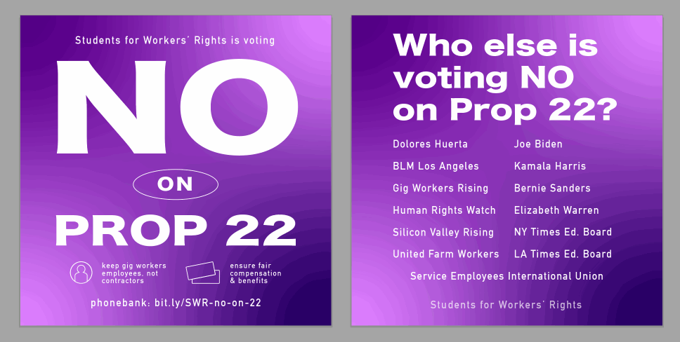
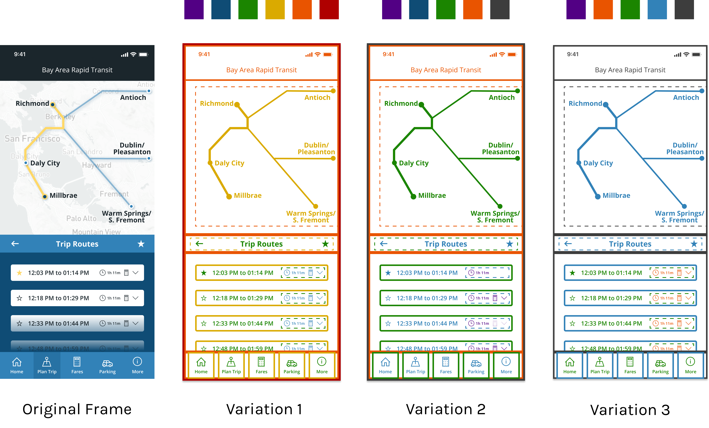

Figma Redesign
Role
User Researcher
Designer
Tools
Design Thinking
Figma
Timeline
Fall 2020
3 days
*In this case study, I use one of my former projects of a BART App Redesign to envision the solution.*
The Design Challenge
How can a design platform, made for & loved by designers, be improved?
When presented with the opportunity of a design print with the various Kleiner Perkins partners, I was most excited to look at Figma. I’ve started using it for almost everything: work projects, user testing, personal vector art, and even to create my resume. Its collaboration and sharing features are unparalleled and have redefined design teams. I believe that working towards these design values and making tools for designers that are truly intuitive and approachable is a small first step that can combat the lack of diversity in design.
Though excited, I was also nervous– navigating a design project completely on my own is never ideal, since I believe incorporating as many voices as possible is key to truly inclusive design.
The Timeline
Over the course of this design sprint, I:
- DAY 1: Surveyed 5 different users about their Figma experiences. Formed my design question. Conducted further research and analysis through competitor studies and task flows.
- DAY 2: Created low-fi mockups that I tested with 2 of my interviewees.
- DAY 3: Finalized a high fidelity mockup. Coded up this case study. Rested after a jam packed Indigenous Peoples’ Day weekend before my first week of work as a designer at the U.S. Census Bureau’s Open Innovation Lab!
The Interviewees
To cast a wide net, I interviewed 5 unique users.
I wanted to establish a general understanding of users' Figma experience before going into detail around one feature.
Here's who I talked to:

Common gain points around what they loved about Figma were:
- The immense opportunity for real time and virtually unlimited collaboration. No more need to send over individual files to team members.
- Flexibility around sharing, components, and embedding.
- Plugins to increase functionality and build community.
Specific pain points they noted were:
- Some elements not scaling properly by default as they’re expanded.
- Text does not have font previews.
- Shortcuts are hard to learn and remember.
- No way to browse and learn from others’ work.
Narrowing the design scope
Elle & Gileen became my "target users".
Since they were both users extremely well versed in design and design software, but had little and extensive experience with Figma respectively, I thought that their perspective on the usability issues defined a user group my solution would be focused on and a user persona that makes up a good portion Figma’s current user base: users migrating from different design platforms that are relatively new to Figma’s interface.
These insights raised 2 "how might we" questions:
- How might we reorganize the left sidebar to make keeping track of and selecting objects more intuitive, especially in terms of matching users’ goals and mental models of their projects?
- How might we enhance the sharing feature to emphasize works-in-progress and streamline the feedback process for both novice and experienced designers?
I moved forward with the first question & focused on object selection through the left sidebar.
The 2nd question felt more like imagining an entirely new feature rather than looking at an existing one and it seemed like an exciting challenge to rethink the seemingly simple feature of object selection.
A Closer Look at the Left Sidebar
The current sidebar
Currently, the left sidebar’s two sections provide distinct but extreme levels of organization: the top contains a high level view of pages that often separate iterations or non-connected frames, while the bottom contains a detailed tree view of objects only through text description.
Pain point: too much vertical information
Users’ issue around the sidebar’s functionality started with the interaction with layers– both users indicated that the process of clicking into layers or groups was confusing, especially when they were first new to the app.
This process puts the onus on users to constantly regroup and rename layers, and becomes increasingly difficult as more objects, layers, and frames are added to the design. They often lost track of what each group consisted of, since the vertical layout gave no other physical indicators of certain layers or groups, which is mirrored in the Select Layer menu and keyboard shortcuts as well.
Select layer graphic from Figma's tutorial
A repetitive & unclear task flow
Elle shared a key insight that when she selects a group, the information she is looking for is often how the objects within that group are organized, instead of simply the objects’s name and z-index ordering, as the tree view provides.
Because of the lack of organization, she shared that when selecting an object that is nested within many groups, she simply continues clicking until it is isolated, without using the layers’ tree model at all, represented in the task flow and gif below.

Above: Elle's current task flow. Below: Visual aspect of clicking into a deep object.

How do competitors approach this?
Many have similar layer & object navigation.
Across the platforms I had access to on my personal laptop (Figma, Illustrator, and Gravit Designer), I noted that none of these applications had visual indicators of the position of objects within a group, though Illustrator's panel included object previews, as shown on the right below. Additionally, there was a marked difference in the way Figma allows users to hover only over groups as a whole while Illustrator still allows users to hover over individual objects even if they are in a group. I thought the latter was more helpful, since it displayed specific positions without clicking in, though it was still visually complicated.
Inspiration from Illustrator’s Outline View
The most interesting and distinct feature I found in terms of building an understanding of objects’ positions was Illustrator’s Outline View, shown below. Stripping down the content to merely its vector shape was extremely helpful for myself in accessing objects, but it still gave me no insight into object grouping and depth.
Toggling the outline view on a recent project
Ideation: Group View
Visualizing parent, child, & sibling relationships
When I was first learning Figma, I found a page on Parent, Child, and Sibling relationships especially helpful. When I showed Elle this graphic, she immediately exclaimed “Yes! This makes so much more sense to me.” That moment was really exciting, since it displayed an effective visual representation of Elle’s mental map of layer and group organization. More broadly, it made sense to make a design software contain more visual information such as this.
Goals & constraints
In thinking about my own approach to this design, I created 3 key objectives, which translated into constraints:
- Empower users to access any object in less than 3 clicks, starting with clicking on the frame that contains the object.
- Utilize colors and simplified shapes to communicate organization.
- Fit seamlessly into Figma’s existing design.
Putting ideas onto paper & pixels
Given this insight into the layers experience, I mapped out the ideal task flow and created sketches for the location of my solution: a new "Group View" feature that would showcase groups through line and color differentiation.


I also mocked up the graphical representation of groups, based on a previous BART app redesign, shown below. Each color represents a different nested group, and dotted lines indicate groupings. All vector shapes' fill are removed, and images were turned into a solid fill shape.
Moving away from the left sidebar
When I showed the wireframes below to Gileen, she said she would prefer to zoom in no matter the location, especially for horizontal frames like website mockups. Since the left sidebar's space was constrained, I moved forward with the rightmost design to utilize the flexible area of the frame.

Adding to the right sidebar & making labels clear
A major concern I had while designing the interface of this feature on the right sidebar was ensuring that the concept of "Group View" was easily understandable. Though both of my interviewees understood parent and child relationships, I could not assume others would as well. I first incorporated labels, shown below on the left, to communicate the "depth" of groups, but Elle said this was too confusing in the context of the left sidebar's tree view. I showed the right labels to my initial group of interviewees and they agreed, even with their differing Figma experience, with Elle's sentiment. I moved forward with "Parent" and "Child" labels.
Solution: Group View
Access any object within 3 clicks*.
*Once colors are customized.
The following protoype was tested and finalized through interviews with Gileen and Elle.
STEP 1 OF 5
Select a Frame.
A new addition to the right sidebar will appear: an option called “Group View”, highlighted in the orange box below. This location makes the feature easily accessible and contextualizes it by being adjacent to the Layout Grid, which provides a similar functionality in terms of adding a visual component to a frame.
STEP 2 OF 5
Turn on Group View through the sidebar or by pressing "G".
This will reveal a simplified visual representation of the frame’s objects. Understand which groups are associated with each color and name on the right sidebar. Each color signifies a deeper group of objects– for example, the gray in this frame represents the highest layer, while the orange represents the deepest layer present.
STEP 3 OF 5
Toggle which group’s colors you want to see present on the frame.
This isolates certain layers users would like to edit or access, especially when there are many nested layers.

STEP 4 OF 5
Access any object within the frame through one click.
No more need to endlessly double click.
STEP 5 OF 5
Customize colors and names in Group View.
Users can customize identifying group details to best fit their mental model of what their groupings mean to them. For example, users may group all text a certain way, so those groups would be labeled “Text”.
FIGMA PROTOTYPE
Interact with the solution here.
Elle's Feedback
Elle loved . . .
- knowing what items are grouped together and nested within each other through the clear color differentiaion, especially since the project used as an example was one she was unfamiliar with.
- hiding layers– ”Sometimes I accidentally click on other assets and this would help me isolate the right ones”.
- feeling comfortable in using it since it fit the Figma’s existing style and workflow.
Elle wished that . . .
- she could access any object without turning “Group View” on.
- “Group View” had an option to turn off the dotted lines, since the different color made the nested group noticeable enough to her.
If I had more time, this is where the iterative design process would start!
Moving Forward

Feasibility studies
The graphical view I mocked up would need to be achievable through a program that analyzes and edits vector shapes, so working with engineers to verify software capabilities and resources will be crucial for implementation.
Testing with diverse and differently abled users
Testing with more diverse users would provide insight on how to match others’ abilities and varying mental models of groups. I would be especially interested in understanding how users with screen readers would interact with "Group View", what preferences between keyboard shortcuts and mouse clicks looks like, and how line width or dashes can communicate group depth for colorblind users. My hope is that features like “Group View” that require less clicks would also benefit users with limited dexterity or muscle strength.